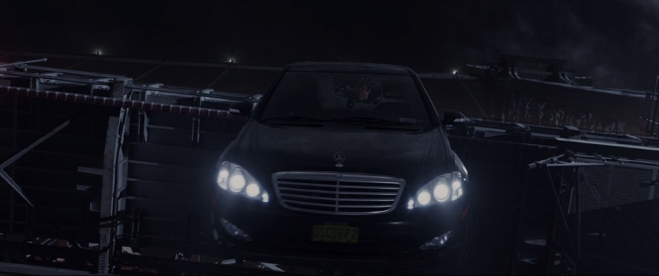
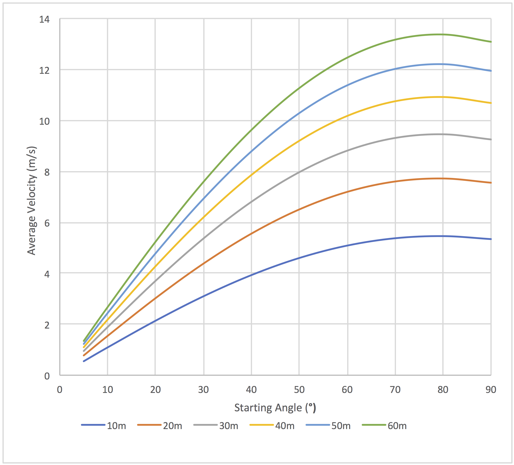

SECTION 1
THE PHYSICS OF SPIDER-MAN
Spider-Man first appeared over 55 years ago, in the fifteenth installment of the comic book Amazing Fantasy. Since its inception in August 1962, Spider-Man has gone on to be one of the most popular and commercially successful superheroes ever. Many attribute this to the fact that Spider-Man, or Peter Parker, was a new breed of superhero who was relatable in a way that the traditional comic book titans such as Batman and Superman weren't[1]. He's a not-so-cool teenager who gets picked on by bullies, isn't good with girls and has to face everyday struggles like the rest of us. It's only when Peter is bitten by a radioactive spider on a school trip to a lab that he develops powers: namely super strength, the ability to scale walls effortlessly and 'spider senses'. This section looks at some of the physics of Spider-Man, primarily using the 2012 film (starring Andrew Garfield) The Amazing Spider-Man as the main reference point. Although a new incarnation of Spider-Man has recently appeared in the Marvel film universe (with him getting his own film released earlier this Summer), I chose to use The Amazing Spider-Man as my main reference point due to it being the most recently made film available to purchase and watch at home/replay through it, thus making my research process easier. I also love that the director of the film is aptly called Marc Webb. The different questions I look at are nested within a dropdown menu system below:
How Strong are Spider-Man's Webs?
While some adaptations of Spider-Man show the webs that the eponymous hero famously employs as an organic subtance that he produces within himself, most versions (this film included) portray the webs as an externally manufactured substance. In this particular film, the web has been originally created by the giant trans-national corporation 'Oscorp', packed into small canisters and then distributed accordingly. These canisters are then remodelled by Peter Parker to fit into a small wrist-watch sized device which can be triggered via touch sensors on his palms to shoot the web. One scene in this film shows Spider-Man catching a car that has been thrown off Williamsburg Bridge with his webs - using this scene, we can try and estimate the rough maximum strength of the webs. You can watch this scene below[a]:
The first things to determine are the mass and length of the car in question. Below is a snapshot of the film[b] which shows the car falling, and which was subsequently identified by the 'Internet Movie Cars Database (IMCDB)' as being a Mercedes-Benz S-Klasse Stretched Limousine[2]. As information about this car online was fairly limited, I opted to use specs from the most recent update of this car - the 2017 Mercedes-Maybach S600. This car is about 5.5m long and weighs around 2400kg[3].
Using this information, we can start to estimate the downwards momentum of the falling car. Before we can do this, however, we need a value for the velocity of the car before it is brought to a halt. We can use the constant acceleration (SUVAT) equations for this. At around 1:20 into the video above, we see that the car is suspended just above the waterline. As the distance from the water to the bridge is 41m[4] (assuming high tide) and the length of the car is 5.5m, I assigned the value of s (the distance the car falls) to be 35m. Assuming the car starts from rest, we can then say that:

where v is the final velocity of the car, u is the initial velocity of the car and a is the acceleration of the car downwards due to gravity. Now that we have values for both the velocity and mass of the car, we can work out its momentum before it's stopped.

As we know that it takes some time for the web to slow the car down, making the assumption that this stopping time is 1 second makes our calculations a bit easier (and is not unreasonable compared to the video above). The force (tension) that the web holds in bringing the car from its current state to at rest is the change in momentum divided by the change in time (1 second), or:

We can then find the tension easily (approx value given but exact value used in later calculations):

Although we're now close, we're not quite there. in order to find a good comparitive value for the strength of this web, we want to find the Ultimate Tensile Strength (UTS). UTS is effectively a measure of how much a material can stand being stretched or pulled on before snapping[5], and is useful in this instance for comparison as it's measured in N/m2 - were it to not have this '/m2' feature, the obvious flaw would be that a thicker string or material would be able to bear a weightier load. In this instance, I'm going to guess that a typical web might have a radius of 2mm:


We can finally therefore work out the UTS of the web given its equation. Note how it's converted from N/m2, or Pascals (Pa), to MegaPascals (MPa):

There we have it! His webs are around 5000MPa strong - roughly 5x the strength of average spider silk (1000MPa, although this value is a very rough average - spider silk strength values greatly range based on type of silk and species of spider)[6]. So how does this stand up to what we would expect? As we are dealing with fiction, the only thing we can do at this stage to judge whether our estimation is reasonable is to compare it to what the film says (which requires another big assumption that the film is scientifically accurate - famously rare amongst sci-fi/comic films). The film states (you can watch the clip on YouTubehere) that this 'biocable' has a tensile strength 10x stronger than steel. A36 steel, one of the most common structural steels employed in the United States of America, has an ultimate tensile strength of around 400-550 MPa[7]. Somewhat surprisingly, this would mean that (assuming our calculations are correct) the film is pretty accurate with its description of the strength of this artifical web.
In the next section we will look at what this means in a real world context and compare it to current man-made materials. For now, however, we will look at another aspect of Spider-Man.
Is It Faster For Spider-Man To Run Or Swing?
Aside from catching heavy object, Spider-Man also uses his trademark webs as a handy transport system to get around town or to make a quick getaway. Have a look at this scene here which shows Spider-Man making an escape from the police (who are not yet on his side)[c]
The question that this then prompts is this: is it really faster for Spider-Man to swing? If we model his movement like that of a pendulum then we can make it a harmonic motion question. This would mean that the main thing affecting his swing speed is the length of the web he's swinging on - we can see from the video that the arches of the tunnel he attaches his webs to are not that high, and also he takes a non-direct/slower zig-zag route. Would it then potentially be faster for him to skateboard (his skills shown below)[d] or even run?

First off, there are a few assumptions we need to state if we want to model this as simple harmonic motion (SHM) - the type of motion where a restoring force, proportional in magnitude to the displacement, acts in the opposite direction of said displacement (illustrated below[e], although the acceleration is labelled instead of the force). They are:
- The web (just in this case) is massless.
- The system is frictionless.
- Spider-Man, at the end of the web, behaves like a mass point.

By modelling Spider-Man's motion as that of a pendulum displaying simple harmonic motion, we can start to unravel the problem. Usually with SHM, we can say that if T is the time period taken for one oscillation of the pendulum, L is the length of the web and g is the gravitational constant, then[f]

This, however, only holds for the small angle approximation - Spiderman (being a physicist) would know that his velocity would be dependent on his starting angle to the vertical and that this value would be greater than about 15°. In order to correct for this, we can use this second equation[g][8]

This is a numerical approximation in an infinite series - this equation is required as the time period increases gradually with the starting angle. Using this equation, we can calculate the time taken for Spider-Man to complete a swing (note that the equation we will use is half of the one above as a swing in our instance is only from one side to the other and not back again). As we can also figure out the horizontal distance travelled in a single swing (2Lsin(θ) for any pendulum with length L and angle from the vertical θ ), we can combine these two values in with the simple relationship that average velocity = total distance travelled/total time taken. We can see what this looks like by varying both starting angle and pendulum/web length. I did this in Microsoft Excel, and my results can be found below both as a table and graphically. The left blue column is the starting angle in degrees, the top blue column is web length in metres and the red columns are average velocity in metres/second.


What we see is that, as expected, velocity increases with pendulum length and also starting angle, up until a maximum point of around 80°. Before we get ahead of ourselves, however, let's bring our focus back to the scenario at hand: Spider-Man is swinging in a zig-zag fashion through a tunnel. What we want to find out now is the height of the tunnel and the distance he covers - this will enable us to compare it to the time it would take for him to run or skateboard.
As it turns out, this tunnel is actually the 125th street viaduct[9]. Here is a snapshot of the viaduct from street level, taken from Google Maps:

{kind=link}
{kind=link}
{kind=link}